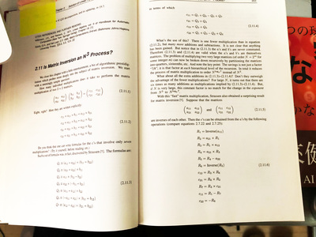

ZAF ２０２１年４月
今回の内容
『ゴールデン・ウィークもＡＩ』
- ０ - 前座
- １ - 前回の『数理クイズ』の解答編
- 行列積のはなし
- ２ - ＡＩでモデルの評価どうしてる？
- AUC について
- ３ - コンピュータ会話教室、
第２回： for loop の実践
- ビデオの解説
- ＡＩでの利用 - dataloader というもの
- ４ - きょうのさいごに
００ - ZAM 近況
ZAM ２月号
コピー本の作り方をお教えします！
- オンラインフォーラムの『ZAM ２月号』スレッド

- ZAM ２月号、完成しました（少し遅れました）

- https://zenkei-ai-forum.github.io/ZAM202102/
- コピー本の作り方
『コピー本印刷用 PDF ファイル - B4 両面コピー（横綴じ）で B5 の冊子が出来上がります。』
から PDF ファイルをダウンロードして


- コンビニに直行！


- 出来上がり！


- 今回の印刷は、「全ページカラー」に挑戦です
- で、余った分は 1,000 円ポッキリで、売ろうかなぁ、と思ってます
- コピー本が 900 円なので、結構リースなブルな値付けだと思います
- ゴールデンウィークあけに出来上がる予定です
また報告します！
ZAM ３月号
完成しつつあります！（？）
- ZAF ３月は、ゲスト二人とぼくの３人がしゃべりました
- ゲスト講演者のみなさまからは、締め切り前日にきっちり原稿届きました！


- 感謝！


- ですが……
……
……
ぼくの執筆が遅れて、まだ完成してません - すいません
- ……
……
……
ではつまらないので
- チラ見せ


- チラ見せ


- チラ見せ


- チラ見せ


- チラ見せ


- こんなかんじです
- ゴールデンウィークの間には、仕上げてリリースしますっ（キリッ
- と、キッチンシンク的に、
なんでも「ゴールデンウィーク」に丸投げしている気が
しないでもない……
- と、キッチンシンク的に、
０１ - 技術書典１１
刺されアワード
受賞を逃す……
- 最終選考には残った！
- しかし、受賞は逃しました……
- 気分はすっかり『村上春樹』でした
- 次回は、多分もうないでしょうね
技術書典１１、自分の執筆プラン
まだ２ヶ月以上あります！（えっ？）
- 正解は、

- 「マイクロりゅうたいりきがく」
と読んで欲しい

技術書典１１、サークルのプラン
機は熟した！ということで、有料版 ZAM こと『ZAM 季報』を創刊します！！
- オンラインフォーラムにスレッド切りました！

- 計画（プラン）
- 予定では『月刊 ZAM』は１月号から６月号まであるはずのあので、 ベースはその合本
- 内容的な目玉は「書き下ろしコンテンツ」です
- サークルメンバーのみなさんからの寄稿を募集しています！


１ - 前回の『数理クイズ』の解答編
行列積のはなし
- 出題の復習から

- なんで n3 か、分かりましたね
- これが、もっと効率的に計算できる？？
- Quanta の記事
"Matrix Multiplication Inches Closer to Mythic Goal"


- Quanta "Matrix Multiplication Inches Closer to Mythic Goal"
に言及されている論文 - Alman, Vassilevska Williams (2020) (arxiv: 2010.05846)

- ま、普通に数学の論文ですね
つまり、訳わからん…… - Quanta の記事に簡単に解説が書いてありましたが
「行列積」を等価な別の問題（テンソルの計算）に置き換えて
そこを最適化する……らしい - "Laser Method" と呼ぶらしい
- 結果は n2.3728596 まで行った！と
- ま、普通に数学の論文ですね
- しかし、まぁ「あっそう」「だからなんだ」という感じですね
- Quanta の記事には、この「行列積」問題の歴史が簡単に書かれていて
一番最初の突破口（問題の発見）は 1969 年の Strassen だ、と

- 普通に考えて
「行列積が n3 よりも効率化できる」
とは、誰も考え付かないよな、と - だからこそ、この論文こそが大事だな、と
- Strassen algorithm （シュトラッセンのアルゴリズム）という wikipedia のエントリーもある


- ポイントは、
素朴に行列席を書くと、 2x2 行列の場合 8 個の「積」の演算が必要だが、
Strassen は 7 個の「積」で書けることを示した！ - この結果が n2.81 だ、と
- ここでちょっと解説だ。
8 = 23
7 = 22.81 - なるほど
- ここでちょっと解説だ。


- ここだっ
付箋までついとるぞ（いつのものやら）
 - ここでの話の主題は
（線形方程式系で重要な応用問題の１つである）
「逆行列の計算」でした- 直接法の１つ「ガウスの消去法 (Gaussian elimination)」に
このトリックが使えるよ、と - 「逆行列の計算」（直接法）は、典型的な n3 の計算タスク
- ちなみに「逆行列の計算」の逐次法は
（収束が早ければ） n2 になります
- 直接法の１つ「ガウスの消去法 (Gaussian elimination)」に
- やっぱり Numerical Recipes は偉大だったな、というはなし
２ - ＡＩでモデルの評価どうしてる？
AUC について
- 精度とは？
- 正解率とは？
- 回帰問題の metrics
- AUC
- Object Detection の metrics
- ところで、昔出した『数理クイズ』覚えてますか？
- Numerical Recipes は偉大だった、パート２
コンピュータ会話教室
第２回： for loop の実践
- 先に見た『行列積』でも、本質的には for loop でした
- 高レベルの言語 (python）やライブラリ（numpy）では、
しかしむしろ、いかに for loop を隠蔽するか、
が効率化のポイントだったりしますが - それは、また、ちょっとレベルの高いはなし
- 高レベルの言語 (python）やライブラリ（numpy）では、
- 前回『for ループ』の抽象化で紹介したビデオの骨子を、一通り、解説します
- 『for ループ』の抽象化

https://youtu.be/EnSu9hHGq5o
- スライド


- ポイントは、 iterator / generator を知ろう、使おう、ということかな


- ＡＩ (pytorch) での利用 - Dataset / DataLoader というもの
- torch.utils.data.Dataset

- torch.utils.data.DataLoader


- 実例：カスタムの Dataset / DataLoader の実装
- Dataset は __len__() と __getitem__() を実装すればよい


- DataLoader は Dataset を指定する


- 使い方（テスト）

- DataLoader は iterable で、 iterator を作って、 next() で要素が順次とれる

{kind=link}
{kind=link}
{kind=link}
{kind=link}
{kind=link}
{kind=link}
{kind=link}
きょうのさいごに
ZAF の終わりは『月刊 ZAM ４月号』の執筆ですね！
- また、オレ一人の寂しい執筆だ……
- でも、みなさんも『ZAM 季報』に向けて、じゃんじゃん書きまくってください！
今後の予定
- ZAF ５月２６日 - 発表者、募集中です！
- ZAF ６月３０日 - チーム・ホンダの『東海道５ｘ』の続編（完結編？）予定です！
- ZAF ７月２８日 - ここは『技術書典１１』のまとめになりますね